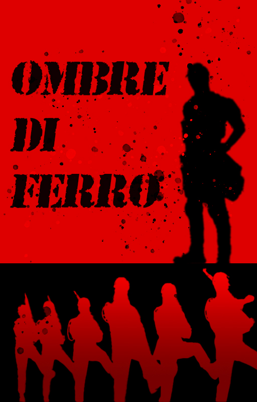

OPERATION:
IRON
Location: Unknown // 2025
"LA GUERRA NON SI COMBATTE SOLO SUL CAMPO DI BATTAGLIA."
Aedrian ha sempre avuto un sesto senso per il pericolo, un istinto che lo ha salvato più di una volta. Ma quando la guerra lo trascina in un'imboscata sanguinosa, si rende conto che il vero nemico non è solo fatto di carne e ossa. C'è qualcosa che si muove tra le ombre, qualcosa che non dovrebbe esistere.SYSTEM SPECS:
- > SELF PUBLISHED
- > GENRE: FANTASY / SHORT STORY